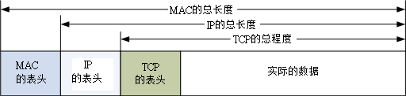
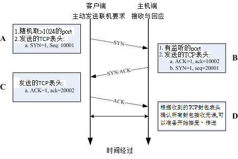

2.4 TCP/IP 的传输层相关封包与数据
网络层的 IP 封包只负责将数据送到正确的目标主机去，但这个封包到底会不会被接受，或者是有没有被正确的接收， 那就不是 IP 的任务啦！那是传送层的任务之一。从 图 2.1-4 我们可以看到传送层有两个重点， 一个是连接导向的 TCP 封包，一个是非连接导向的 UDP 封包，这两个封包很重要啊！数据能不能正确的被送达目的， 与这两个封包有关喔！
2.4.1 可靠联机的 TCP 协议
在前面的 OSI 七层协议当中，在网络层的 IP 之上则是传送层，而传送层的数据打包成什么？ 最常见的就是 TCP 封包了。这个 TCP 封包数据必须要能够放到 IP 的数据袋当中才行喔！ 所以，我们将图 2.1-4 简化一下，将 MAC, IP 与 TCP 的封包数据这样看：
 图 2.4-1、各封包之间的相关性
想当然尔，TCP 也有表头数据来记录该封包的相关信息啰？没错啦～ TCP 封包的表头是长这个样子的：
| 4 bits | 6 bits | 6 bits | 8 bits | 8 bits |
|---|---|---|---|---|
| Source Port | Destination Port | |||
| Sequence Number | ||||
| Acknowledge Number | ||||
| Data Offset | Reserved | Code | Window | |
| Checksum | Urgent Pointer | |||
| Options | Padding | |||
| Data |
图 2.4-2、TCP 封包的表头资料
上图就是一个 TCP 封包的表头数据，各个项目以 Source Port, Destination Port 及 Code 算是比较重要的项目，底下我们就分别来谈一谈各个表头数据的内容吧！
Source Port & Destination Port (来源埠口 & 目标端口) 什么是埠口(port)？我们知道 IP 封包的传送主要是藉由 IP 地址连接两端， 但是到底这个联机的通道是连接到哪里去呢？没错！就是连接到 port 上头啦！ 举例来说，鸟哥的网站有开放 WWW 服务器，这表示鸟站的主机必须要启动一个可以让 client 端连接的端口，这个端口就是 port (中文翻译成为埠口)。同样的，客户端想要连接到鸟哥的鸟站时，就必须要在 client 主机上面启动一个 port ，这样这两个主机才能够利用这条『通道』来传递封包数据喔！这个目标与来源 port 的纪录，可以说是 TCP 封包上最重要的参数了！
Sequence Number (封包序号) 由于 TCP 封包必须要带入 IP 封包当中，所以如果 TCP 数据太大时(大于 IP 封包的容许程度)， 就得要进行分段。这个 Sequence Number 就是记录每个封包的序号，可以让收受端重新将 TCP 的数据组合起来。
Acknowledge Number (回应序号) 为了确认主机端确实有收到我们 client 端所送出的封包数据，我们 client 端当然希望能够收到主机方面的响应，那就是这个 Acknowledge Number 的用途了。 当 client 端收到这个确认码时，就能够确定之前传递的封包已经被正确的收下了。
Data Offset (资料补偿) 在图 2.4-2 倒数第二行有个 Options 字段对吧！那个 Options 的字段长度是非固定的，而为了要确认整个 TCP 封包的大小，就需要这个标志来说明整个封包区段的起始位置。
Reserved (保留) 未使用的保留字段。
Code (Control Flag, 控制标志码) 当我们在进行网络联机的时候，必须要说明这个联机的状态，好让接收端了解这个封包的主要动作。 这可是一个非常重要的句柄喔！这个字段共有 6 个 bits ，分别代表 6 个句柄，若为 1 则为启动。分别说明如下：
URG(Urgent)：若为 1 则代表该封包为紧急封包， 接收端应该要紧急处理，且图 2.4-1 当中的 Urgent Pointer 字段也会被启用。
ACK(Acknowledge)：若为 1 代表这个封包为响应封包， 则与上面提到的 Acknowledge Number 有关。
PSH(Push function)：若为 1 时，代表要求对方立即传送缓冲区内的其他对应封包，而无须等待缓冲区满了才送。
RST(Reset)：如果 RST 为 1 的时候，表示联机会被马上结束，而无需等待终止确认手续。这也就是说， 这是个强制结束的联机，且发送端已断线。
SYN(Synchronous)：若为 1，表示发送端希望双方建立同步处理， 也就是要求建立联机。通常带有 SYN 标志的封包表示『主动』要连接到对方的意思。
FIN(Finish)：若为 1 ，表示传送结束，所以通知对方数据传毕， 是否同意断线，只是发送者还在等待对方的响应而已。
其实每个项目都很重要，不过我们这里仅对 ACK/SYN 有兴趣而已，这样未来在谈到防火墙的时候，你才会比较清楚为啥每个 TCP 封包都有所谓的『状态』条件！那就是因为联机方向的不同所致啊！底下我们会进一步讨论喔！ 至于其他的数据，就得请您自行查询网络相关书籍了！
Window (滑动窗口) 主要是用来控制封包的流量的，可以告知对方目前本身有的缓冲器容量(Receive Buffer) 还可以接收封包。当 Window=0 时，代表缓冲器已经额满，所以应该要暂停传输数据。 Window 的单位是 byte。
Checksum(确认检查码) 当数据要由发送端送出前，会进行一个检验的动作，并将该动作的检验值标注在这个字段上； 而接收者收到这个封包之后，会再次的对封包进行验证，并且比对原发送的 Checksum 值是否相符，如果相符就接受，若不符就会假设该封包已经损毁，进而要求对方重新发送此封包！
Urgent Pointer(紧急资料) 这个字段是在 Code 字段内的 URG = 1 时才会产生作用。可以告知紧急数据所在的位置。
Options(任意资料) 目前此字段仅应用于表示接收端可以接收的最大数据区段容量，若此字段不使用， 表示可以使用任意资料区段的大小。这个字段较少使用。
Padding(补足字段) 如同 IP 封包需要有固定的 32bits 表头一样， Options 由于字段为非固定， 所以也需要 Padding 字段来加以补齐才行。同样也是 32 bits 的整数。
谈完了 TCP 表头数据后，再来让我们了解一下这个表头里面最重要的端口信息吧！
- 通讯端口
在上图的 TCP 表头数据中，最重要的就属那 16 位的两个咚咚，亦即来源与目标的端口。由于是 16 位，因此目标与来源端口最大可达 65535 号 (2 的 16 次方)！ 那这个埠口有什么用途呢？上面稍微提到过，网络是双向的，服务器与客户端要达成联机的话， 两边应该要有一个对应的埠口来达成联机信道，好让数据可以透过这个信道来进行沟通。
那么这个埠口怎么打开呢？就是透过程序的执行！举例来说，鸟哥的网站上，必须要启动一个 WWW 服务器软件， 这个服务器软件会主动的唤起 port 80 来等待客户端的联机。你想要看我网站上的数据，就得要利用浏览器， 填入网址，然后浏览器也会启动一个埠口，并将 TCP 的表头填写目标端口为 80 ，而来源端口是你主机随机启动的一个埠口， 然后将 TCP 封包封装到 IP 后，送出到网络上。等鸟站主机接收到你这个封包后，再依据你的埠口给予回应。
这么说你或许不好理解，我们换个说法好了。假如 IP 是网络世界的门牌，那么这个埠口就是那个门牌号码上建筑物的楼层！ 每个建筑物都有 1~65535 层楼，你需要什么网络服务，就得要去该对应的楼层取得正确的资料。但那个楼层里面有没有人在服务你呢？ 这就得要看有没有程序真的在执行啦。所以，IP 是门牌，TCP 是楼层，真正提供服务的， 是在该楼层的那个人 (程序)！
Tips: 曾经有一个朋友问过我说：『一部主机上面这么多服务，那我们跟这部主机进行联机时，该主机怎么知道我们要的数据是 WWW 还是 FTP 啊？』就是透过埠口啊！因为每种 Client 软件他们所需要的数据都不相同，例如上面提到的浏览器所需要的数据是 WWW ，所以该软件默认就会向服务器的 port 80 索求数据；而如果你是使用 filezilla 来进行与服务器的 FTP 数据索求时， filezilla 当然预设就是向服务器的 FTP 相关埠口 (预设就是 port 21) 进行连接的动作啦！所以当然就可以正确无误的取得 Client 端所需要的数据了
再举个例子来说，一部主机就好像是一间多功能银行，该银行内的每个负责不同业务的窗口就好像是通讯端口， 而我们民众就好像是 Client 端来的封包。当你进入银行想要缴纳信用卡账单时， 一到门口服务人员就会指示你直接到该窗口去缴纳，当然，如果你是要领钱，服务人员就会请你到领钱的窗口去填写数据， 你是不会跑错的对吧！ ^_^。万一跑错了怎么办？呵呵！当然该窗口就会告诉你『我不负责这个业务，你请回去！』， 呵呵！所以该次的联机就会『无法成功』咯！

- 特权埠口 (Privileged Ports)
你现在了解了埠口的意义后，再来想想，网络既然是双向的，一定有一个发起端。问题是，到底要联机到服务器取得啥玩意儿？ 也就是说，哪支程序应该在哪个端口执行，以让大家都知道该埠口就是提供哪个服务，如此一来，才不会造成广大用户的困扰嘛！ 所以啰，Internet 上面已经有很多规范好的固定 port (well-known port)， 这些 port number 通常小于 1024 ，且是提供给许多知名的网络服务软件用的。 在我们的 Linux 环境下，各网络服务与 port number 的对应默认给他写在 /etc/services 档案内喔！ 底下鸟哥列出几个常见的 port number 与网络服务的对应：
| 端口 | 服务名称与内容 |
|---|---|
| 20 | FTP-data，文件传输协议所使用的主动数据传输端口 |
| 21 | FTP，文件传输协议的命令通道 |
| 22 | SSH，较为安全的远程联机服务器 |
| 23 | Telnet，早期的远程联机服务器软件 |
| 25 | SMTP，简单邮件传递协议，用在作为 mail server 的埠口 |
| 53 | DNS，用在作为名称解析的领域名服务器 |
| 80 | WWW，这个重要吧！就是全球信息网服务器 |
| 110 | POP3，邮件收信协议，办公室用的收信软件都是透过他 |
| 443 | https，有安全加密机制的WWW服务器 |
另外一点比较值得注意的是，小于 1024 以下的埠口要启动时， 启动者的身份必须要是 root 才行，所以才叫做特权埠口嘛！这个限制挺重要的，大家不要忘记了喔！ 不过如果是 client 端的话，由于 client 端都是主动向 server 端要数据， 所以 client 端的 port number 就使用随机取一个大于 1024 以上且没有在用的 port number。
- Socket Pair
由于网络是双向的，要达成联机的话得要服务器与客户端均提供了 IP 与埠口才行。 因此，我们常常将这个成对的数据称之为 Socket Pair 了！
- 来源 IP + 来源埠口 (Source Address + Source Port)
- 目的 IP + 目的埠口 (Destination Address + Destination Port)
由于 IP 与埠口常常连在一起说明，因此网络寻址常常使用『 IP:port 』来说明，例如想要连上鸟哥的网站时， 正确的鸟哥网站写法应该是：『 linux.vbird.org:80 』才对！
2.4.2 TCP 的三向交握
TCP 被称为可靠的联机封包，主要是透过许多机制来达成的，其中最重要的就是三向交握的功能。 当然， TCP 传送数据的机制非常复杂，有兴趣的朋友请自行参考相关网络书籍。 OK，那么如何藉由 TCP 的表头来确认这个封包有实际被对方接收，并进一步与对方主机达成联机？ 我们以底下的图示来作为说明。
 图 2.4-3、三向交握之封包连接模式
在上面的封包连接模式当中，在建立联机之前都必须要通过三个确认的动作， 所以这种联机方式也就被称为三向交握(Three-way handshake)。 那么我们将整个流程依据上面的 A, B, C, D 四个阶段来说明一下：
A:封包发起 当客户端想要对服务器端联机时，就必须要送出一个要求联机的封包，此时客户端必须随机取用一个大于 1024 以上的端口来做为程序沟通的接口。然后在 TCP 的表头当中，必须要带有 SYN 的主动联机(SYN=1)，并且记下发送出联机封包给服务器端的序号 (Sequence number = 10001) 。
B:封包接收与确认封包传送 当服务器接到这个封包，并且确定要接收这个封包后，就会开始制作一个同时带有 SYN=1, ACK=1 的封包， 其中那个 acknowledge 的号码是要给 client 端确认用的，所以该数字会比(A 步骤)里面的 Sequence 号码多一号 (ack = 10001+1 = 10002)， 那我们服务器也必须要确认客户端确实可以接收我们的封包才行，所以也会发送出一个 Sequence (seq=20001) 给客户端，并且开始等待客户端给我们服务器端的回应喔！
C:回送确认封包 当客户端收到来自服务器端的 ACK 数字后 (10002) 就能够确认之前那个要求封包被正确的收受了， 接下来如果客户端也同意与服务器端建立联机时，就会再次的发送一个确认封包 (ACK=1) 给服务器，亦即是 acknowledge = 20001+1 = 20002 啰。
D:取得最后确认 若一切都顺利，在服务器端收到带有 ACK=1 且 ack=20002 序号的封包后，就能够建立起这次的联机了。
也就是说，你必须要了解『网络是双向的』这个事实！ 所以不论是服务器端还是客户端，都必须要透过一次 SYN 与 ACK 来建立联机，所以总共会进行三次的交谈！ 在设定防火墙或者是追踪网络联机的问题时，这个『双向』的概念最容易被忽略， 而常常导致无法联机成功的问题啊！切记切记！
Tips: 鸟哥上课谈到 TCP 最常做的事就是，叫一个同学起来，实际表演三向交握给大家看！ 1. 鸟哥说：A同学你在不在？ 2. A同学说：我在！那鸟哥你在不在？ 3. 鸟哥说：我也在 此时两个人就确认彼此都可以听到对方在讲啥，这就是可靠联机啦！ ^_^
2.4.3 非连接导向的 UDP 协议
UDP 的全名是：『User Datagram Protocol, 用户数据流协议』，UDP 与 TCP 不一样， UDP 不提供可靠的传输模式，因为他不是面向连接的一个机制，这是因为在 UDP 的传送过程中，接受端在接受到封包之后，不会回复响应封包 (ACK) 给发送端，所以封包并没有像 TCP 封包有较为严密的检查机制。至于 UDP 的表头资料如下表所示：
| 16 bits | 16 bits |
|---|---|
| Source Port | Destination Port |
| Message Length | Checksum |
| Data |
图 2.4-4、UDP 封包的表头资料
TCP 封包确实是比较可靠的，因为通过三向交握嘛！不过，也由于三向交握的缘故， TCP 封包的传输速度会较慢。 至于 UDP 封包由于不需要确认对方是否有正确的收到数据，故表头数据较少，所以 UDP 就可以在 Data 处填入更多的资料了。同时 UDP 比较适合需要实时反应的一些数据流，例如影像实时传送软件等， 就可以使用这类的封包传送。也就是说， UDP 传输协议并不考虑联机要求、联机终止与流量控制等特性， 所以使用的时机是当数据的正确性不很重要的情况，例如网络摄影机！
另外，很多的软件其实是同时提供 TCP 与 UDP 的传输协议的，举例来说，查询主机名的 DNS 服务就同时提供了 UDP/TCP 协议。由于 UDP 较为快速，所以我们 client 端可以先使用 UDP 来与服务器联机。 但是当使用 UDP 联机却还是无法取得正确的数据时，便转换为较为可靠的 TCP 传输协议来进行数据的传输啰。 这样可以同时兼顾快速与可靠的传输说！
Tips: 那么上课时怎么介绍 UDP 呢？很简单喔！鸟哥就会说：『现在老师就是在进行 UDP 的传送，因为老师一直讲一直讲， 俺也没有注意到你有没有听到，也不需要等待你的响应封包！就这样一直讲！当然，你没有听到鸟哥讲啥，我也不会知道...』
2.4.4 网络防火墙与 OSI 七层协定
由上面的说明当中，我们知道数据的传送其实就是封包的发出与接受的动作啦！并且不同的封包上面都有不一样的表头 (header)，此外，封包上面通常都会具有四个基本的信息，那就是 socket pair 里面提到的『来源与目的 IP 以及来源与目的端的 port number』 。当然啦，如果是可靠性联机的 TCP 封包，还包含 Control Flag 里面的 SYN/ACK 等等重要的信息呢！好了，开始动一动脑筋，有没有想到『网络防火墙』的字眼啊？
封包过滤式的网络防火墙可以抵挡掉一些可能有问题的封包， Linux 系统上面是怎么挡掉封包的呢？其实说来也是很简单，既然封包的表头上面已经有这么多的重要信息， 那么我就利用一些防火墙机制与软件来进行封包表头的分析，并且设定分析的规则，当发现某些特定的 IP 、特定的埠口或者是特定的封包信息(SYN/ACK等等)，那么就将该封包给他丢弃， 那就是最基本的防火墙原理了！
举例来说，大家都知道 Telnet 这个服务器是挺危险的，而 Telnet 使用的 port number 为 23 ，所以，当我们使用软件去分析要送进我们主机的封包时， 只要发现该封包的目的地是我们主机的 port 23 ，就将该封包丢掉去！那就是最基本的防火墙案例啦！ 如果以 OSI 七层协议来说，每一层可以抵挡的数据有：
- 第二层：可以针对来源与目标的 MAC 进行抵挡；
- 第三层：主要针对来源与目标的 IP ，以及 ICMP 的类别 (type) 进行抵挡；
- 第四层：针对 TCP/UDP 的埠口进行抵挡，也可以针对 TCP 的状态 (code) 来处理。
更多的防火墙信息我们会在第九章防火墙与第七章认识网络安全当中进行更多的说明喔！